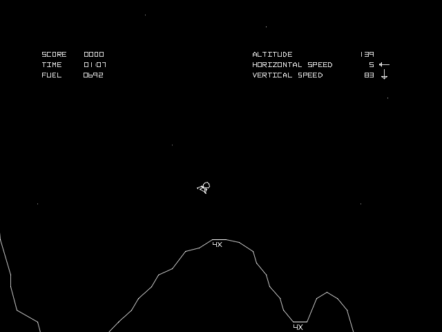

Utviklingen
V-modellen
Klikk på ulike navn for å hoppe til det avsnittet i dokumentet.
Designfaser
Kravspesifikasjon
Oppgaven
Lag et spill inspirert av det klassiske arkade-spillet Lunar Lander (søk på "Lunar Lander Atari" på YouTube). I den grad du synes det er til hjelp i planleggingen og utviklingen å lage en strukturert liste med funksjonelle krav til spillet, brukergrensesnittskisser, flytdiagram, pseudokode, handlingsdiagram og/eller testspesifikasjon, så gjør du det, og dokumenter det. Du bør uansett ta i bruk noen av disse planleggingsteknikkene for å demonstrere at du behersker noe fra den delen av læreplanen som har med planlegging å gjøre. I tillegg skal du lage selve spillet.
Merknad: Utifra oppgaven kan man gjennomføre kravspesifikasjonen, men siden dette er en eksamen så vil denne spesifikasjonen bli laget på grunnlag av oppgaveteksten, altså i det virkelige liv hadde denne designdelen blitt gjennomført i samarbeid med oppdragsgiver i en større grad.
Oprasjonelle krav:
- Ingen direkte krav er spesifisert i oppgaveteksten, men jeg tolker det dit at spillet har disse oprasjonelle kravene:
- Skal kunne kjøres på personlige klient'er (ikke mobil eller tablet) med tastatur og mus, og det skal være spillbart selv om hardwaret er noen år gammelt.
- Hovedsakelig skal fungere i alle nettlesere (ettersom det er et nett-spill). Derfor skal spillet til størst mulig grad være spillbart i blant annet Google Chrome, Mozilla FireFox, Opera og Internet Explorer. Senere i dokumentasjonen vil det være uttypet til hvilken grad spillet er støttet av nettlesere, ettersom det kan oppstå problemer med noen nettlesere og det er begrenset tid til å utvikle prosjektet.
- Spillet bør være så enkelt at de fleste bør kunne spille det. Det bør være så enkelt forklart at selv barn over 7-års alderen forstår spillet.
Funksjonelle krav:
- Spillet skal være inspirert av Lunar Lander og derfor inneholde liknende spillmekanikker.
- Utenom punktet over er det ikke flere direkte fuksjonelle krav som er spesifisert, derfor tolker jeg det dit at dette er mine funksjonelle krav for dette prosjektet:
- Krav:
- Alle ressurser skal ha både en lenke til opprinelsessted og en lisens som defineres i lisenser.json.
- Akselerasjon og hastighet - Et system som minner om Lunar Lander's akselerasjons- og hastighetssystem slik at romskipet handler som om det var i et gravitasjonsfelt og den har treghet.
- Tid - Spillet skal bruke tid til å beregne hastigheter og akselerasjon, ikke antall oppdateringer.
- Poeng - Spillet må ha en poengsum som blir regnet utifra ulike faktorer slik at man kan øve seg og se om man blir bedre (evt. konkurrere med venner).
- Brukersamhandling - Spillet må kunne håndtere inngangsdata fra brukeren.
- Forklaring av spillet (knapper, meningen osv.) - Det skal hovedsakelig være et enkelt spill som inneholder minst en meny, en opplæringsdel av spillmekanikkene og en bane/et nivå, men hvis det er tid så kan for eksempel flere nivå legges til.
- Lyd og effekter
- Eventuelle tillegg:
- Begrenset drivstoff
- Bonuspoeng for å lande et spesielt sted
- Ulike landingsfartøy
- Bakgrunn som endrer seg (skaper 3D effekt, paralax)
- Flere baner (evt. generering av baner)
- Flerspiller
- Lagring av høyeste poengsum
- Kunst (teksturer og bilder)
Systemdesign
Hva skal systemet/spillet gjøre?
- Spillet skal simulere en månelanding i enkel forstand, i likhet med Lunar Lander.
- Spillet skal gi en utfordring til spillere av et stort aldersspekter, og gi poeng utifra hvor dyktige spillerene er til å lande landingsmodulen.
- Spillet skal motta og respondere til fire knapper og museklikk fra spilleren.
Hvilke moduler består systemet/spillet av?
Hovedsakelig består spillet av en modul som er kode i seg selv. Utover dette så benyttes det ikke biblioteker eller tilleggspakker utenom HTML5, Javascript (ES5) og CSS
Hvordan skal dataflyten foregå i systemet/spillet?
Dataen flyter innad i app.js og vises på skjermen gjennom bruk av canvas og evt. HTML elementer
Hvordan skal brukeren samhandle med systemet/spillet?
Som nevnt i første punktet over, så skal brukeren samhandle med systemet gjennom bruk av fire knapper på tastaturet og musepekeren.
Brukergrensesnittet
Ettersom oppgaven spesifiserer at man skal ta inspirasjon i Lunar Lander av Atari så ønsker jeg å benytte noen skjermbilder fra dette spillet til å vise mine ideer om brukergrensesnittet.
 Her ser vi et skjermbilde fra Lunar Lander. I spillet jeg lager ønsker jeg å ha et liknende brukergrensesnitt, men med en mer moderne følelse. Altså en annen font og en litt annerledes framvisning.
Testing av systemdesign
- Få en utenforstående til å prøve spille og spøre om brukergrensesnittet og måten man samhandler med spillet på er hensiktsmessig og godt forklart
- Spørre personen om motivet, poengssystemet er godt forklart og forståelig
Programdesign
Detaljert design av systemet/spillet
Merknad: Alle klassene og metodene er nøyere beskrevet i koden ved hjelp av kommentarer og i egen dokumentasjon.
Klasser:
- DrawableObject - Alle objekter som skal kunne tegnes på canvas skal arve egenskapene til denne klassen, men denne klassen skal ikke konstruere objekter alene.
- MoveableObject - Alle objekter som skal ha fart og akselerasjon må arve egenskapene til denne klassen, men denne klassen skal ikke konstruere objekter alene.
- Text - Konstruerer tekst-objekter som kan tegnes på canvas.
- Rectangle - Konstruerer en firkant som kan tegnes på canvas.
- UI - Konstruerer et objekt som holder styr på brukergrensesnittet og som kan tegne enkelt elementer på canvas.
- Ground - En klasse som holder styr på bakken i spillet og kan tegne denne på canvas.
- Lander - Konstruerer objektet som symboliserer spilleren og kan tegne denne på canvas.
Se testing av klassene.
Spilløkken:
Spillet skal kjøres ved hjelp av requestAnimationFrame() som er bakgrunnen for spilløkken. Denne funksjonen kalles med en funksjon som inneholder spilløkkaen, og på slutten av spilløkken så kalles requestAnimationFrame() igjen. Slik fortsetter løkken så hurtig som mulig, uten å kjøre synkront, slik en while løkke hadde gjort. Dette gjør at selv om spilløkka aldri slutter å gå, så kan det skje eventer i javascript. Spilløkka skal gjøre fire ting som er som følger:
- Sjekke om det har skjedd noen eventer, og håndtere disse (altså håndtere inngangsverdier)
- Oppdatere alle elementer i spillet, som for eksempel månefartøyet, ved hjelp av eventuell inngangsverdier fra forrige punkt, deretter så sjekker man etter kollisjoner.
- Tegne alle elementer som skal tegnes på canvas.
- Kalle
requestAnimationFrame() med seg selv som parameter.
Disse fire punktene er forklart næremere her.
- I spillet skal man ta inngangsverdier gjennom eventer, altså for eksempel et
onclick event kan kalles når som helst under game løkken, men hvis man prøver å for eksempel endre på hastigheten til månelandere mens variablen brukes til å oppdatere hastigheten, så kan det skape problemer. Derfor samler jeg opp alle eventene som skjer hver gang løkken kjører og behandler de i starten av spilløkken. Altså er det første punktet i løkken å behandle en oppsamling av eventer som har skjedd under den forrige spilløkken.
- Etter at eventene er behandlet, så oppdateres alle objekter i spillet. Altså for eksempel flyttes månelanderen. I tillegg til å oppdatere objekter sjekker også denne delen av spillet for kollisjoner og oppdaterer variabler som tid og hastighet. En annen viktig del av oppdateringen er tiden fra forrige oppdatering, altså delta tid. Se klokke og tider for en nærmere forklaring. Denne delta-tid vil derfor være en parameter i alle oppdateringsfunksjoner.
- Når alle objektene er oppdatert så tegnes de på canvaset i den tredje delen. Spillet skal ha ulike canvaser slik at man kan velge hvilket canvas man vil tegne de på, dette gjør at man kan få en lagdeling og at man for eksempel kan få en bakgrunn som ikke overlapper med noen av spillobjektene.
- Nå er spilløkken ferdig, men spillet er ikke over. Derfor kaller man løkken på nytt i punkt fire, slik at spillet fortsetter å kjøre. Som nevnt over så gjøres dette ved hjelp av
requestAnimationFrame().
Se testing av spilløkken.
Ulike tilstander
Spillet kan være i ulike tilstander, i den form av at man starter på menyen. Når man så starter selve spillet så begynner man å spille, og da er spillet i en annen tilstand. En lett måte å skille mellom ulike tilstander er å lage en individuell spilløkke for hver tilstand og kjøre disse istedenfor å sjekke tilstanden før hver endring i spillet. Dette gjør man ved å ha en Array med ulike tilstander spillet kan være i og i spilløkken så kaller man de tre første punktene på den nåværende tilstanden.
Siden dette er et relativt lite spill så skal jeg bruke hovedsakelig bruke 3 ulike tilstander som er som følger:
- "Menu" Spillet starter i denne tilstanden, det er hovedmenyen der man kan starte spillet, se på instrukser eller endre instillinger.
- "In-game" Her spilles selve spillet, altså det er her man prøver å lande månelanderen.
- "Post-game" Når spillet er over så vises denne skjermen med informasjon om poeng, tips og videre valg om hva man vil gjøre.
I tillegg til disse tre så skal jeg bruke en tilstand som heter "Test". Denne er egentlig ikke en del av sluttproduktet men under produksjon så brukes denne tilstanden til å teste ulike deler av koden for å sjekke at koden fungere slik som den er spesifisert.
Se testing av de ulike tilstandene.
Klokke og tider
Ettersom spilløkken repeteres basert på requestAnimationFrame() så kan løkken gå så fort som klienten klarer å kjøre spillet, derfor er det viktig at bevegelser skjer basert på tid og ikke basert på antall oppdateringer. Dette gjør at det er viktig å ha en klokke som holder orden på tiden.
Grunnen til at dette er viktig er fordi hvis spillet oppdateres 60 ganger i sekundet, og hver gang månelanderen oppdateres så beveger den seg en piksel. Hvis det er en klient som ikke klarer å opprettholde denne oppdateringsfrekvensen og spillet bare oppdaterers 30 ganger i sekundet, så vil også månelanderen bare flytte seg 30 piksler på et sekund istedenfor 60 piksler. Derfor ganger man forskjellen i tid med forflyttningen slik at hvis oppdateringsfrekvensen synker, så øker delta og da øker avstanden som objektet flyttes. Dermed forflytter månelanderen seg like langt uansett om spillet oppdateres 30 eller 60 ganger per sekund.
Se testing av klokka.
Justering og balansering av spillmekanikker
For at spillet skal kunne bli finjustert slik at alle mekanikkene fungerer optimalt og at det både er gøy og utfordrende, så lager jeg et objekt som heter CONST helt i starten av koden. Denne kan evt. flyttes ut til en JSON-fil. Dette objektet skal inneholde mange ulike variabler som endrer på spillet. For eksempel kan det være en variabel for tygdekraften. Dette objektet gjør at man etter å ha skrevet ferdig koden lett kan endre på mekanikkene slik at de fungerer slik man ønsker det.
Testing av programdesign
For å sørge for at spillet fungerer slik som spesifisert så er det vikitg å teste hver enkelt del av programmet som er definert i programdesignet, slik at når man setter sammen programmet så fungerer delene av koden slik som funksjoner og mekanikker.
Testing av klassene
- Alle klassene (som skal konstruere objekter selv) skal lage et objekt og det skal både oppdateres og tegnes på canvas.
- Metodene til hver enkelt klasse skal prøves ut med "feilverdier", altså skal det sendes inn verdier som egentlig ikke skal komme inn.
Testing av spilløkken
- Spilløkken skal kjøres og det skal brukes
console.log() til å sørge for at rekkefølgen er riktig
- Event håndtereren skal testet ut ved at det brukes
console.log() og at det skjer mange eventer på samme tid, disse må da også bli utført i riktig rekkefølge, altså bare i punkt 1 av løkken.
Testing av de ulike tilstandene
- Alle tilstandene skal bli byttet til og de skal kjøre spilløkken i riktig rekkefølge
- NB! Spesielt viktig er det at byttet mellom tilstander skjer ordentlig.
Testing av klokka
- Klokken skal være en del av spilløkken og verdiene skal printes til konsollen.
Implementasjon
Se dokumentasjon av javascript for å få et nærmere innblikk i implementasjonen. Et viktig fokus under implementasjonen har vært å skrive kode som lett kan utvides. Et eksempel på dette er hvordan baner lastes inn til spillet. Alle banene ligger i en fil som heter maps.json og her kan man endre på banene og verdiene utenfor spillet. Når man starter spillet så leser spillmotoren av denne filen og dataene blir brukt i framstillingen av banene. Ved å bare legge til en bane med nødvendig informasjon i maps.json så er banen allerede en del av spillet.
Testfaser
Enhetstesting
Det er blitt gjennomført enhetstesting i tråd med det som ble oppgitt i Testing av programdesign. Alle testene er ikke dokumentert, og bakgrunnen for dette er at innenfor tidsperspektivet vi fikk til rådighet så fikk jeg ikke tid til å dokumentere alt av tester. Noen tester som er dokumenter er:
- Testing av spilløkken
- Brukte
console.log() til å sørge for at rekkefølgen av spilløkken var riktig. Fant ut at Object.prototype.extend() ikke fungerte som ønskelig, og istedenfor at den allerede definerte funksjonen, i prototypen til objektet som blir utvidet, blir kalt først, så skal den heller kalle denne sist. Slik får man at hvis en klasse arver funksjoner fra en annen, så kalles de like funksjonene fra foreldre-klassen før sine egne funksjoner.
Integrasjonstesting
Ved hjelp av en utenforstående person har spillet blitt testet på punktene oppgitt i systemdesignet.
- Som tilbakemelding har jeg fått at brukergrensesnittet på menyer og meldinger er fint, men innad i spillet så er det noe uforståelig hva negativ og positiv hastighet er. Jeg skjønner at det ikke er optimalt slik som det er nå, men dessverre så har jeg ikke nok tid til å gjøre endringer på brukergrensesnittet. I motsetning til dette så har jeg fått gode tilbakemeldinger på benevning av de ulike verdiene innad i spillet, altså som m/s. Dette skaper klarhet og gjør at man kan skaffe seg en nærmere forestilling om hvor stor hastigheten er.
- Rundt poengsystemet så er det meste klart, men det er forsatt litt mystisk. Dette mener jeg er en litt morsom del av spillet og det er ønskelig.
Akseptansetesting
Kravspesifikasjonen som ble presenter i starten av utviklingsprosessen var i hovedsak en oppgave, og utifra denne laget jeg meg en liste med krav. Punktene som er strøket ut mener jeg at jeg har utført.
Merknad: Siden akseptansetesting egentlig skal gjennomføres med klienten, så blir denne delen noe annerledes enn en ordentlig akseptansetest.
Oprasjonelle krav:
- Ingen direkte krav er spesifisert i oppgaveteksten, men jeg tolker det dit at spillet har disse oprasjonelle kravene:
Skal kunne kjøres på personlige klient'er (ikke mobil eller tablet) med tastatur og mus, og det skal være spillbart selv om hardwaret er noen år gammelt.Hovedsakelig skal fungere i alle nettlesere (ettersom det er et nett-spill). Derfor skal spillet til størst mulig grad være spillbart i blant annet Google Chrome, Mozilla FireFox, Opera og Internet Explorer. Senere i dokumentasjonen vil det være uttypet til hvilken grad spillet er støttet av nettlesere, ettersom det kan oppstå problemer med noen nettlesere og det er begrenset tid til å utvikle prosjektet.- Spillet bør være så enkelt at de fleste bør kunne spille det. Det bør være så enkelt forklart at selv barn over 7-års alderen forstår spillet.
Funksjonelle krav:
Spillet skal være inspirert av Lunar Lander og derfor inneholde liknende spillmekanikker.- Utenom punktet over er det ikke flere direkte fuksjonelle krav som er spesifisert, derfor tolker jeg det dit at dette er mine funksjonelle krav for dette prosjektet:
- Krav:
Alle ressurser skal ha både en lenke til opprinelsessted og en lisens som defineres i lisenser.json.Akselerasjon og hastighet - Et system som minner om Lunar Lander's akselerasjons- og hastighetssystem slik at romskipet handler som om det var i et gravitasjonsfelt og den har treghet.Tid - Spillet skal bruke tid til å beregne hastigheter og akselerasjon, ikke antall oppdateringer.Poeng - Spillet må ha en poengsum som blir regnet utifra ulike faktorer slik at man kan øve seg og se om man blir bedre (evt. konkurrere med venner).Brukersamhandling - Spillet må kunne håndtere inngangsdata fra brukeren.Forklaring av spillet (knapper, meningen osv.) - Det skal hovedsakelig være et enkelt spill som inneholder minst en meny, en opplæringsdel av spillmekanikkene og en bane/et nivå, men hvis det er tid så kan for eksempel flere nivå legges til.Lyd og effekter
- Eventuelle tillegg:
Begrenset drivstoff- Bonuspoeng for å lande et spesielt sted
- Ulike landingsfartøy
- Bakgrunn som endrer seg (skaper 3D effekt, paralax)
Flere baner (evt. generering av baner)- Flerspiller
- Lagring av høyeste poengsum
- Kunst (teksturer og bilder)
Utifra tid som var til disposisjon så er jeg fornøyd med spillet jeg har produsert. Jeg ser helt klart områder som kunne vært bedre, men de delene som er lagt til så langt fungerer dugelig.
Tilbake til spillet